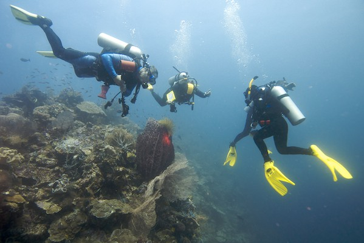

Wakatobi 2008 – People
Index
Previous
25 of 110
Next
Rating: 3
Aperture: ƒ/4
Shutter Speed: 1/125
Exposure Bias: -1 ev
Focal Length (35mm): 18.0mm
Focal Length: 12mm
Keywords: Underwater Photography, Wakatobi
Name: Wakatobi 2008-09-15 18-22-42
Date: 9/17/08 12:22:42 AM GMT+08:00
ISO: ISO 200
File Size: 15.29 MB
Project Path: Wakatobi 2008
